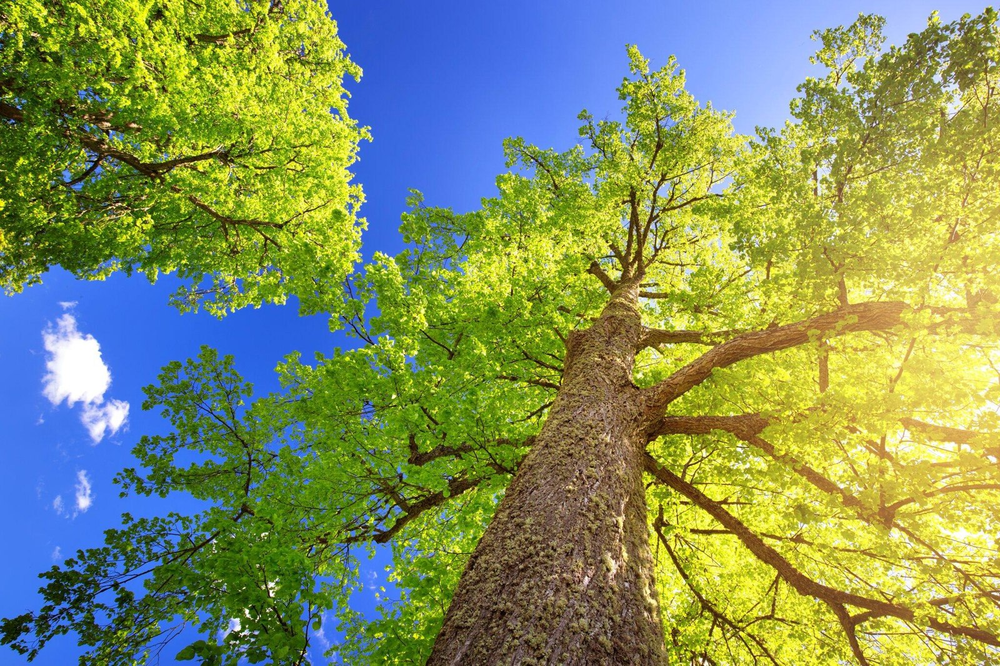
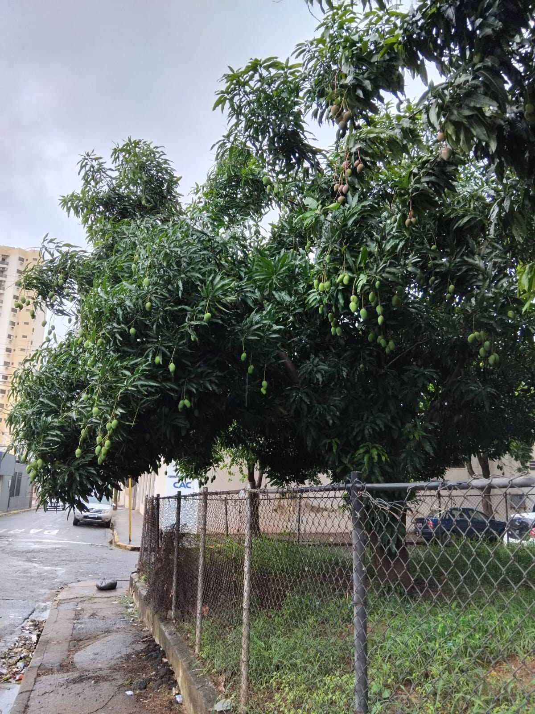
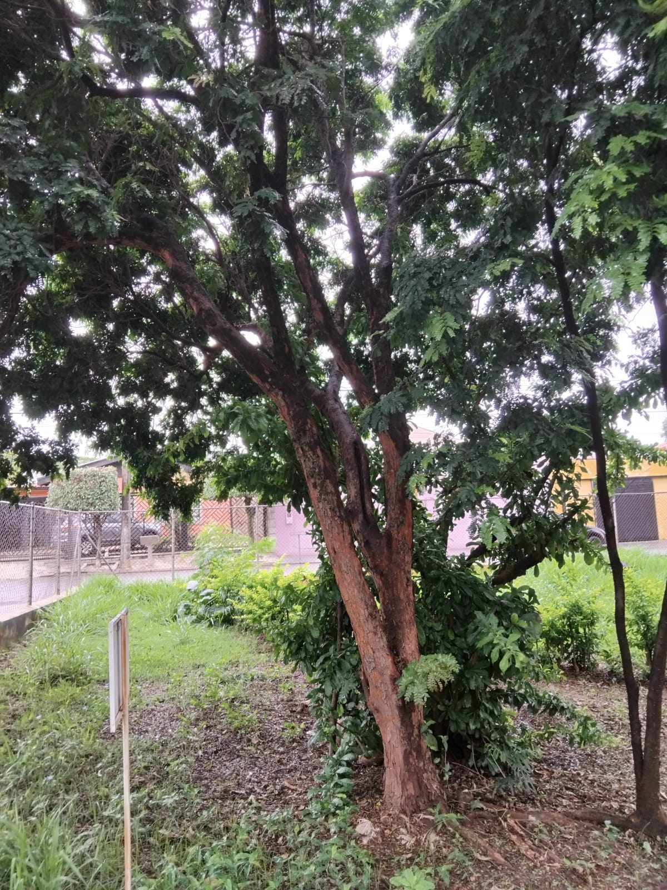

SUA ÁREA NO RAIZ DIGITAL
Descubra a natureza
Descubra a natureza
ao seu redor.
Conheça as árvores da nossa escola e descubra mais sobre cada espécie de um jeito simples e interativo.
Explorar árvores ↗
COMECE POR AQUI
O que você deseja fazer?
Escolha uma das opções para começar sua experiência.
NOSSO PATRIMÔNIO VERDE
Árvores da nossa escola
Explore as árvores registradas na Escola Monsenhor Sarrion, em Presidente Prudente.







A identificação das espécies pelas fotos é provisória e deve ser conferida pela equipe do projeto.